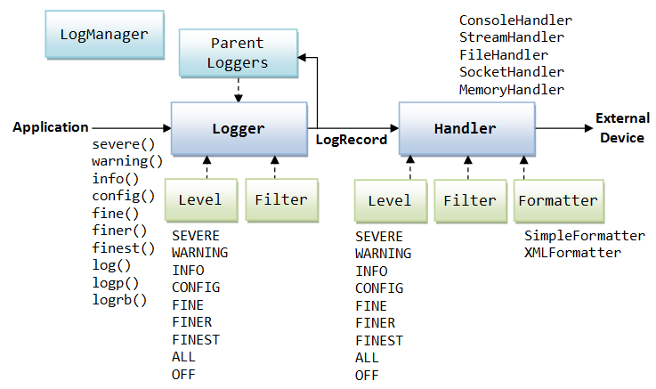

Introduction
Instead of using System.err.println() to write error messages to the system console, JDK 1.4 provides a logging framework in package java.util.logging. The logging API allows you to write different log messages (such as error, informational, and configuration messages) to a central location (such as rotating logs) and configure the format and what level of messages are to be written.
Getting Started with Examples
Example 1: Simple Use
1 2 3 4 5 6 7 8 9 10 11 12 13 14 15 16 17 18 19 |
import java.util.logging.*;
public class TestSimpleLogger {
// Invoke the factory method to get a new Logger or return the existing Logger
// of the fully-qualified class name.
// Set to static as there is one logger per class.
private static final Logger logger = Logger.getLogger(TestSimpleLogger.class.getName());
public static void main(String[] args) {
logger.info("Logging begins..."); // log INFO-level message
try {
// Simulating an Exception
throw new Exception("Simulating an exception");
} catch (Exception ex){
logger.log(Level.SEVERE, ex.getMessage(), ex);
}
logger.info("Done...");
}
}
|
The outputs of the program is as follow. There are 3 log records. Each log record consists of the time-stamp, fully-qualified class name, method name and the message, and optional exception stack trace.
Nov 15, 2012 3:59:09 PM TestSimpleLogger main INFO: Logging begins... Nov 15, 2012 3:59:09 PM TestSimpleLogger main SEVERE: Simulating an exception java.lang.Exception: Simulating an exception at TestSimpleLogger.main(TestSimpleLogger.java:13) Nov 15, 2012 3:59:09 PM TestSimpleLogger main INFO: Done...
Dissecting the Program
- The main entity of the logging framework is the
Loggerclass (in packagejava.util.logger), on which your applications make logging calls. - private static final Logger logger = Logger.getLogger(TestSimpleLogger.class.getName());
To obtain aLogger, use thestaticfactory methodLogger.getLogger(String loggerName). This method creates a newLoggeror returns the existingLoggerof the givenloggerName. We typically use the fully-qualified class name (obtained viaClassName.class.getName()) as the logger's name. The logger is declaredstaticas there is typically one logger per class. - We can control the output via the so-called Logging Level (in class
Levelof packagejava.util.logging). The pre-defined levels in descending order of severity are:SERVER,WARNING,INFO,CONFIG,FINE,FINER,FINEST. - logger.info(...);
To write a log record of a particular level, you can use the convenient methods:severe(msg),warning(msg),info(msg),config(msg),fine(msg),finer(msg),finest(msg)of aLoggerobject. - logger.log(Level.SEVERE, "Exception", ex);
To log anExceptionobject, you could uselog(level, msg, exception)method. The above example throws anExceptionin thetryclause and logs theExceptionin thecatchclause. - By default, the logger outputs log records of level
INFOand above (i.e.,INFO,WARNINGandSEVERE) to standard error stream (System.err). - You can redirect the
System.errto a file viaSystem.setErr()as follows:PrintStream outPS = new PrintStream( new BufferedOutputStream( new FileOutputStream("out.log", true))); // append is true System.setErr(outPS); // redirect System.err
Example 2: Log to File via Logger's File Handler
Instead of logging to the System.err, you can also log to a file (or an OutputStream, or network socket, or memory buffer).
1 2 3 4 5 6 7 8 9 10 11 12 13 14 15 16 17 18 19 20 21 22 23 24 25 26 27 28 29 30 31 32 |
import java.io.IOException;
import java.util.logging.*;
public class TestFileLogger {
private static final Logger logger = Logger.getLogger(TestFileLogger.class.getName());
public static void main(String[] args) throws IOException {
// Construct a default FileHandler.
// "%t" denotes the system temp directory, kept in environment variable "tmp"
Handler fh = new FileHandler("%t/test.log", true); // append is true
// fh.setFormatter(new SimpleFormatter()); // Set the log format
// Add the FileHandler to the logger.
logger.addHandler(fh);
// Set the logger level to produce logs at this level and above.
logger.setLevel(Level.FINE);
try {
// Simulating Exceptions
throw new Exception("Simulating an exception");
} catch (Exception ex){
logger.log(Level.SEVERE, ex.getMessage(), ex);
}
logger.info("This is a info-level message");
logger.config("This is a config-level message");
logger.fine("This is a fine-level message");
logger.finer("This is a finer-level message");
logger.finest("This is a finest-level message"); // below the logger's level
fh.flush();
fh.close();
}
}
|
Dissecting the Program
- private static final Logger logger = Logger.getLogger(TestFileLogger.class.getName());
Again, we invoke the factory method to obtain aLoggerwith the fully-qualified class name. This method creates a newLoggeror returns an existingLogger. - Handler fh = new FileHandler("%t/test.log");
logger.addHandler(fh);
To log a a file, allocate aFileHandlergiven a log-file name (with "%t" denotes the system temporary directory retrieved from the environment variableTEMPorTMP). Attach theFileHandlerto the logger. - logger.setLevel(Level.FINER);
You can set the level for the logger to discard messages below this level. You can useLevel.ALLto log all levels andLevel.OFFto discard all messages. - Run the program and notice that there are two logs: the default
ConsoleHandler(System.err) containing messages with levelINFOand above; and theFileHandlercontaining messages with levelFINERand above. The records inFileHandleris kept in XML format, e.g.,<record> <date>2011-11-25T15:18:50</date> <millis>1322205530355</millis> <sequence>0</sequence> <logger>TestFileLogger</logger> <level>SEVERE</level> <class>TestFileLogger</class> <method>main</method> <thread>1</thread> <message>java.lang.Exception: Simulating an exception</message> <exception> <message>java.lang.Exception: Simulating an exception</message> <frame> <class>TestFileLogger</class> <method>main</method> <line>21</line> </frame> </exception> </record>To use simple text format instead of the XML format for the file handler, uncomment this line to set theFormatter:fh.setFormatter(new SimpleFormatter());
Example 4: Redirecting System.out and System.err to Log File
1 2 3 4 5 6 7 8 9 10 11 12 13 14 15 16 17 18 19 20 21 22 23 24 25 26 27 28 29 30 31 32 33 34 35 36 37 38 39 |
import java.io.*;
import java.util.logging.*;
public class TestFileLoggerRedirect {
private static final Logger logger = Logger.getLogger(TestFileLoggerRedirect.class.getName());
public static void main(String[] args) throws IOException {
// Construct a default FileHandler.
Handler fh = new FileHandler("test.log", true); // append is true
fh.setFormatter(new SimpleFormatter()); // Set the log format
// Add the FileHander to the logger.
logger.addHandler(fh);
// Set the logger level to produce logs at this level and above.
logger.setLevel(Level.FINE);
// Redirecting System.out and System.err
PrintStream outPS =
new PrintStream(
new BufferedOutputStream(
new FileOutputStream("test.log", true))); // append is true
System.setErr(outPS); // redirect System.err
System.setOut(outPS);
try {
// Simulating Exceptions
throw new Exception("Simulating an exception");
} catch (Exception ex){
logger.log(Level.SEVERE, ex.getMessage(), ex);
}
logger.info("This is a info-level message");
logger.config("This is a config-level message");
logger.fine("This is a fine-level message");
logger.finer("This is a finer-level message");
logger.finest("This is a finest-level message"); // below the logger's level
System.out.println("Writing to System.out");
System.err.println("Writing to System.err");
}
}
|
Example 3: Using a Set of Rotating Log Files
Read HERE.
There is no reason to use System.err.println() if logging is enabled, unless they are issued thru legacy software. You can redirect System.err and System.out to the log 0 (active log) for rotating log.
Logging Framework Explained
Key Classes in java.util.logging
The key elements in java.util.logger are:
Class Logger
The main entity on which your applications make logging calls. Loggers are normally named based on the fully-qualified class name and organized in a hierarchical manner. To obtain a Logger, invoke the static factory method Logger.getLogger(String loggerName). This method will create a new Logger or return an existing Logger for the given loggerName. Since we typically use one logger per class, we assign it as a static variable of the class.
Class Level
A set of standard logging levels that can be used to control the output. You can configure your application to output log messages of a certain level and above, while discarding those below this level. The levels (defined in static constants of class Level) in descending order of severity are:
Level.SEVERE: a serious failure, which prevents normal execution of the program, for end users and system administrators.Level.WARNING: a potential problem, for end users and system administrators.Level.INFO: reasonably significant informational message for end users and system administrators.Level.CONFIG: hardware configuration, such as CPU type.Level.FINE,Level.FINER,Level.FINEST: three levels used for providing tracing information for the software developers.
In the logging API, these pre-defined levels are assigned an integer value, e.g., SEVERE is 1000 and FINEST is 300.
In addition, Level.OFF (with value of Integer.MAX_VALUE) turns off logging and Level.ALL (with value of Integer.MIN_VALUE) logs all levels of messages. You can theoretically use custom integer value in your level.
You can set the logging level in a configuration file. You can also set the logging level dynamically via the Logger.setLevel() method. For example,
// Output log messages of INFO and above
aLogger.setLevel(Level.INFO);
Logging Methods
The Logger class provides a set of convenience method for writing log message for each of the logging levels:
public void severe(String msg) public void warning(String msg) public void info(String msg) public void config(String msg) public void fine(String msg) public void finer(String msg) public void finest(String msg)
These methods forward the given message to all the registered output handlers if the logger is currently enabled for the given logging level.
You can also use the general log(), logp() and logrb() methods to produce log records:
// Forward the message to all the output handlers if the logger is enabled for the level public void log(Level level, String msg) // Log Precise: similar to log() but specified explicit source class and method names public void logp(Level level, String sourceClass, String sourceMethod, String msg) // Log with ResourceBundle public void logrb(Level level, String sourceClass, String sourceMethod, String bundleName, String msgKey)
Class Handler
Each logger can have access to one or more handlers. The Logger forwards LogRecords (on or above the logger's level) to all its registered handlers. The handler exports them to an external device. You can also assign a Level to a handler to control the outputs. The following handlers are provided:
ConsoleHandler: for writing toSystem.err.StreamHandler: for writing to anOutputStream.FileHandler: for writing to either a single log file, or a set of rotating log files.SocketHandler: for writing to a TCP port.MemoryHandler: for writing to memory buffers.
Class Formatter
Once the Handler decides to publish a LogRecord (i.e., it meets the Level and Filter check). It passes the LogRecord to the Formatter attached to format the LogRecord into a String. The available Formatters are SimpleFormatter (for text message) and XMLFormatter (XML output). You can also build your own custom Formatter.
The output of SimpleFormatter consists of time-stamp, class name, method name, level, message and possible exception (as in Example 1):
Nov 25, 2011 2:05:48 PM com.mytest.SimpleUse doSomething
SEVERE: java.lang.Exception: Simulating an exception
java.lang.Exception: Simulating an exception
at com.mytest.SimpleUse.doSomething(SimpleUse.java:18)
at com.mytest.SimpleUse.main(SimpleUse.java:26)
A sample output of XMLFormatter is (Example 2):
<record>
<date>2011-11-25T15:18:50</date>
<millis>1322205530355</millis>
<sequence>0</sequence>
<logger>TestFileLogger</logger>
<level>SEVERE</level>
<class>TestFileLogger</class>
<method>main</method>
<thread>1</thread>
<message>java.lang.Exception: Simulating an exception</message>
<exception>
<message>java.lang.Exception: Simulating an exception</message>
<frame>
<class>TestFileLogger</class>
<method>main</method>
<line>21</line>
</frame>
</exception>
</record>
Class Filter
Besides the Level, you can attach a Filter to a Logger or Handler to filter out the log messages for fine-grain control. To create a Filter, you implement the Filter interface, and override the isLoggable(LogRecord) boolean method to decide if a given LogRecord should be published.
interface Filter {
// Returns true if the LogRecord is to be published.
boolean isLoggable(LogRecord record);
}
Hierarchy of Loggers and Passing of LogRecords to Handlers
Loggers are organized in a hierarchical tree structure, with the root logger denoted by "" (empty string). Loggers are typically named based on the fully-qualified class name (e.g., com.mytest.SimpleUse) or package name (e.g., com.mytest). Take note that the hierarchy is artificially and strangely arranged based on the dot. That is, com.mytest.SimpleUse is the parent of com.mytest.SimpleUse.Something, although the later does not make sense in Java class hierarchy!
If you did not set the level of a logger (or set the level to null), it inherits the level from its immediate parent.
By default, the root logger ("") has a ConsoleHandler that writes to System.err. Again, by default, the ConsoleHandler has a level of INFO, no Filter, with SimpleFormatter; the root logger also has a level of INFO.
When a logger decides to produce a LogRecord, the logger not only passes the LogRecord to all its attached Handler(s), but it also forwards the LogRecord to its parent logger. The parent logger forwards the LogRecord to all its attached Handler(s) and its parent, without performing level or filter check. Eventually, the LogRecord reaches the root logger. By default, the root logger has a ConsoleHandler (that writes to System.err) with level of INFO.
In Example 1,
- We did not create any handler. The
LogRecords are forwarded to therootlogger's defaultConsoleHandler. - Try cutting some
FINE,FINERlogs. They will not be produced, as theConsoleHandler's level isINFO. - We did not set the level of the logger. It inherits the level from its nearest parent (which is
root, of default level ofINFO). - Try setting the level of this logger lower than
INFO. It has no effect as theConsoleHandlerhas a higher level. - Try setting the level of this logger higher than
INFO(saysWARNING). This takes effect.
In example 2,
- The
LogRecords are again forwarded to the root logger's defaultConsoleHandler. - In addition, we attach a
FileHandlerto the current logger. By default, theFileHandlerhas level ofALL, noFilter, withXMLFormatter.private static final Logger logger = Logger.getLogger(SimpleUseFile.class.getName()); ...... Handler fh = new FileHandler("%t/test.log"); logger.addHandler(fh); // attach the handler to the current logger - Instead, it is common to attach the
FileHandlerto therootlogger. In this way, theFileHandlerwill be available to all the loggers in the system.Handler fh = new FileHandler("%t/test.log"); // Add the FileHander to the root ("") logger, which is the ancestor of all loggers. Logger.getLogger("").addHandler(fh);
Example: The following program prints information about loggers.
1 2 3 4 5 6 7 8 9 10 11 12 13 14 15 16 17 18 19 20 21 22 23 24 |
package com.mytest;
import java.util.logging.*;
public class PrintLoggerInfo {
private static final Logger logger = Logger.getLogger(PrintLoggerInfo.class.getName());
public static void main(String[] args) {
System.out.println("This logger's level is " + logger.getLevel()); // null
System.out.println("This logger's filter is " + logger.getFilter()); // null
System.out.println("Parent class is " + logger.getParent()); // RootLogger
System.out.println("Parent classname is " + logger.getParent().getName()); // ""
Logger root = Logger.getLogger("");
System.out.println("Root logger's level is " + root.getLevel()); // INFO
System.out.println("Root logger's filter is " + root.getFilter()); // null
Handler[] handlers = root.getHandlers();
for (Handler h : handlers) {
System.out.println("Handler is " + h); // ConsoleHandler
System.out.println("Handler's level is " + h.getLevel()); // INFO
System.out.println("Handler's filter is " + h.getFilter()); // null
System.out.println("Handler's formatter is " + h.getFormatter()); // SimpleFormatter
}
}
}
|
Configuring Logging
Class LogManager
There is a global LogManager responsible for creating and manager the loggers and maintaining the configuration.
The default configuration establishes a single ConsoleHandler with level of INFO on the root logger for sending output to System.err.
Configuration File
[TODO]
Using a Set of Rotating Log Files
To create a set of rotating log files, use one of the following constructors to construct a FileHandler:
FileHandler(String filename, int fileSizeLimit, int fileCount) // Initialize a FileHandler to write to a set of rotating log files. // fileSizeLimit: number of bytes // fileCount: number of files FileHandler(String filename, int fileSizeLimit, int fileCount, boolean append) // with an append flag (true for append and false for override).
The filename shall consist of %g, which denotes the generation number. For example, "MyApp%g.log" with file count of 5, will create 5 log files, from MyApp0.log to MyApp4.log. As each file reaches (approximately) the given file-size limit, it is closed, rotated out, and a new file opened. The files are renamed as "0", "1", "2", and so on, where "0" is the currently-used log file, and the highest number is the oldest one.
By default, the FileHandler has level of Level.ALL, no Filter, using XMLFormatter.
Example
1 2 3 4 5 6 7 8 9 10 11 12 13 14 15 16 17 18 19 20 21 22 23 24 25 26 27 28 |
package com.mytest;
import java.io.IOException;
import java.util.logging.*;
public class TestRotatingFiles {
// Invoke the factory method to a new Logger or return the existing Logger
private static final Logger logger = Logger.getLogger(TestRotatingFiles.class.getName());
public static void main(String[] args) throws IOException {
// Construct a set of rotating log files.
// "%t" denotes the system temp directory.
// "%g" denotes the generation number.
// File size is 1024 bytes (for testing)
// Number of files is 3, from 0 to 2.
// Append is true (not overriding).
Handler files = new FileHandler("%t/test%g.log", 1024, 3, true);
// Use text formatter instead of default XML formatter
// Default level is ALL, no Filter.
files.setFormatter(new SimpleFormatter());
// Add the FileHander to the root logger.
Logger.getLogger("").addHandler(files);
// Start logging
for (int i = 0; i < 100; ++i) {
logger.info("Testing log message " + i);
}
}
}
|
Three log files, test0.log, test1.log and test2.log are created in the system temporary directory (based on the environment variable TEMP or TMP), with test0.log as the current log file and test2.log as the oldest.
To detach the default console handler (which logs INFO-level and above):
// Remove the default console handler
Logger parentLogger = Logger.getLogger("");
Handler[] handlers = parentLogger.getHandlers();
for (Handler handler : handlers) {
parentLogger.removeHandler(handler);
}
Localization via ResourceBundle
Each logger may be associated with a ResourceBundle for mapping into localized message strings. You can use the method logrb() to create a log entry with a ResourceBundle.
Example: [TODO]
Writing Custom Formatter
To write your custom Formatter, you extend from the base class java.util.logging.Formatter, and override the format() method. You may also override the getHead() and getTail() methods to wrap head and tail strings around a set of formatted records, e.g., XML starting and ending elements. You could use the formatMessage() method which returns a localized string based on the LogRecord and possibly a ResourceBundle provided in the logrb() call.
abstract String format(LogRecord record) // Format each LogRecord - to be overridden in subclass String getHead(Handler h) // Called when the handler first use this formatter String getTail(Handler h) // Called before this formatter is closed String formatMessage(LogRecord record) // Format into a localized string
Example
MyHtmlFormatter.java
1 2 3 4 5 6 7 8 9 10 11 12 13 14 15 16 17 18 19 20 21 22 23 24 25 26 27 28 29 30 31 32 33 34 35 36 37 38 39 40 41 42 43 44 45 46 47 48 49 50 51 52 53 54 55 56 57 |
package com.mytest; import java.text.SimpleDateFormat; import java.util.Date; import java.util.logging.*; /** * Create a custom HTML logging Formatter to show the entries * in a table with 3 columns: level, time-stamp and message. */ public class MyHtmlFormatter extends Formatter { // This method is called for every log records to be published. // Write an HTML row, with cells level, time-stamp and message @Override public String format(LogRecord record) { StringBuilder buf = new StringBuilder(); buf.append("<tr>"); // Level - Show in red for levels on or above WARNING if (record.getLevel().intValue() >= Level.WARNING.intValue()) { buf.append("<td style='color:red'>"); buf.append(record.getLevel()); } else { buf.append("<td>"); buf.append(record.getLevel()); } buf.append("</td>"); // Time stamp buf.append("<td>"); buf.append(formatDateTime(record.getMillis())); buf.append("</td>"); // Message buf.append("<td>"); buf.append(formatMessage(record)); buf.append("</td>"); buf.append("</tr>"); return buf.toString(); } // Called when the handler opens the formatter - Write HTML starting @Override public String getHead(Handler h) { return "<html><body><h2>Log Entries</h2><table border='1'>" + "<tr><th>Level</th><th>Time</th><th>Message</th></tr>"; } // Called when the handler closes the formatter - Write HTML ending @Override public String getTail(Handler h) { return "</table></body></html>"; } // Helper method to format the time-stamp private String formatDateTime(long millisecs) { SimpleDateFormat dateFormat = new SimpleDateFormat("MMM dd,yyyy HH:mm:ss"); Date recordDate = new Date(millisecs); return dateFormat.format(recordDate); } } |
TestMyHtmlFormatter.java
1 2 3 4 5 6 7 8 9 10 11 12 13 14 15 16 17 18 19 20 21 22 23 24 25 26 27 28 29 30 31 32 33 34 35 36 37 |
package com.mytest;
import java.io.IOException;
import java.util.logging.*;
public class TestMyHtmlFormatter {
private final static Logger logger = Logger.getLogger(TestMyHtmlFormatter.class.getName());
// Create a FileHandler and attach it to the root logger.
// Create a MyHtmlFormatter and attach to the FileHandler.
public static void setupLogger() throws IOException {
Logger rootLogger = Logger.getLogger("");
Handler htmlFileHandler = new FileHandler("%t/log.html");
Formatter htmlFormatter = new MyHtmlFormatter();
rootLogger.addHandler(htmlFileHandler);
htmlFileHandler.setFormatter(htmlFormatter);
}
public void writeLog() {
logger.setLevel(Level.ALL);
logger.severe("This is a SEVERE-level log");
logger.warning("This is a WARNING-level log");
logger.info("This is a INFO-level log");
logger.finest("This is a FINEST-level log");
try {
// Simulating Exceptions
throw new Exception("Simulating an exception");
} catch (Exception ex){
logger.log(Level.SEVERE, ex.getMessage(), ex);
}
}
public static void main(String[] args) throws IOException {
setupLogger();
TestMyHtmlFormatter m = new TestMyHtmlFormatter();
m.writeLog();
}
}
|
printStackTrace()
Older Java programs tend to use printStackTrace() in the catch clause to print the stack trace to the System.err, as follows:
try {
......
} catch (Exception ex) {
// Print the stack trace to System.err
ex.printStackTrace();
}
The printStackTrace(), which is not thread-safe, is nowadays considered a bad practice and should not be used on the production codes. It is highly recommended to either remove the printStackTrace() from production code, or replaced by a more robust and powerful logging facility (such as Java Logging Framework or Log4j).
For example, you can use the Java logging framework as follows to replace the printStackTrace().
public class MyClassName {
private static final Logger logger = Logger.getLogger(MyClassName.class.getName());
.....
// Within a method
try {
......
} catch (Exception ex) {
// Log the stack trace
logger.log(Level.SEVERE, ex.getMessage(), ex);
}
.....
}
Why printStackTrace() is bad?
- The
printStackTrace()method is not thread-safe (and you can't synchronize onSystem.errandSystem.out). In other words, a multi-threaded application will likely interleave the stack traces and produce very confusing log entries. For agent applications, the stack traces could dirty the user prompt. On the other hand, Logger's methods are thread-safe. For example, althoughConsoleHandlerandStreamHandlerpublish toSystem.err, but the operation is synchronized - every thread that attempts to publish a log entry must acquire the lock on the monitor associated with theStreamHandlerinstance. - Stack traces are meant for debugging by the developers during the development, not for end users in production. They should therefore be directed to a log file instead of console. End users shall not be exposed to the stack traces.
- Redirecting
System.errto a file (viaSystem.setErr()) may not solve the problem, because the log file could be huge. You need a set of rotating log files. - Logging facilities are far more powerful than the simple
printStackTrace()! You can control the amount of outputs produced. You can direct the outputs to console, file (including rotating log files), memory, and even network (send to a remote host or trigger a email?!). - Stack trace, by itself, may not be sufficient to debug the program. Logging facility could be used to log additional information, system configuration, and program traces.
Log4j
Apache's Log4j is a popular Java logging framework, available @ http://logging.apache.org.
To create a logger:
import org.apache.log4j.Logger; ...... private static final Logger logger = Logger.getLogger(MyClassName.class);
[TODO]
REFERENCES
- Java Logging Overview @ http://docs.oracle.com/javase/1.4.2/docs/guide/util/logging/overview.html.